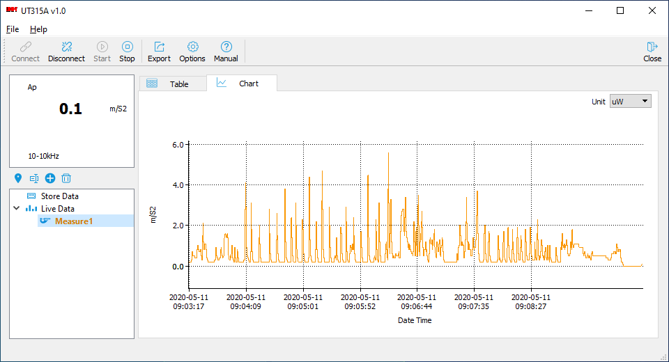

модул: Металне конструкције
Рачунарско моделирање: Уводне напомене. Дефиниција, класификација и подела модела. Методологија рачунарског моделирања конструкција. Геометријски модели. Геометријски идентични и неидентични модели конструкција. Аналитички модели. Прорачунски модели конструкција. Математичко моделирање равних линијских носача. Класификација (штапови, греде, ребра). Врсте модела носача (штапни системи, носачи на еластичној подлози, оквирни носачи, ланчаница). Математичко моделирање површинских носача. Класификација (плоче, зидна платна, љуске). Врсте модела носача (плоче напрегнуте у својој равни, плоче изложена савијању, плоче ослоњена на еластичној подлози, љуске). Нумеричко моделирање конструкција применом концепта МКЕ и МКТ. Симулациони модели. Модели конструкција по спроведеном испитивању. Статичка и динамичка анализа: линеарно и нелинеарно понашање конструкција.
Теренски рад: Преглед конструкција моста. Редовни преглед моста.
Рачунарске симулације: Уводне напомене. Примена симулационих модела конструкција као подлога за мониторинг конструкција. Симулација статичког дејства на моделу конструкције применом рачунарских апликација. Симулација динамичког дејства на моделу конструкције применом рачунарских апликација. Симулација дејстава у фазној изградње конструкције применом рачунарске апликација. Верификација стварног понашања у односу на прорачуном предвиђено радно стање модела конструкција са гледишта критеријума носивости, употребљивости и стабилности. Преглед и стање стандарда, правилника и прописа.
Методе извођења наставе: предавање, вежбе, теренски рад, консултације.
Теренски рад је један преглед конструкција моста, класификован као редовни преглед са прописаним садржајем. Редовни преглед укључује – визуелни преглед, основна тестирања, једноставну процену стања конструкције. Пре прегледа конструкција припремити: Скице целе мостовске конструкције и појединих делова (према потреби); означити на скицама орјентацију моста (дeо путне мреже и стране света) и делове моста ради лакше орјентације; податке о мосту (пројектант, извођач, записници са претходних прегледа и санација). По извршеном прегледу саставља се записник са фотодокументацијом регистрованих оштећења, који чини саставни део семинарског рада. Семинарски рад је документ и пише се у складу са методологијом научно истраживачког рада.
модул: Бетонске конструкције
- нема
Burgess & Niple: How It Works: Bridge Digital Twin |02:20|
Литература
- Д. Ковачевић: МКЕ моделирање у анализи конструкција, Грађевинска књига, Београд, 2006.
- М. Секуловић: Теорија линијских носача, Грађевинска књига, Београд, 2005.
- Д.Д. Милашиновић: The finite strip method in computational mechanics, Бирографика, Суботица, 1997
- А. Прокић: Матрична анализа танкозидних конструкција, Kramerprint, Земун, 1999.
- Упуство за примену програма TOWER и SAP2000.
због тога што је и моје интересовање усмерено рачунарском моделирању конструкција, приложена је и шира литература за информисање и истраживање.


Tower 8.4: Модел друмског ланчаног моста преко реке Тисе на путу Кањижа – Нови Кнежевац |ИММ, 2018|

ИММ: UNI-T UT315A - убрзање тачке
DECODE BD: Modeling of Burj Khalifa in Etabs v17 with Column, Shear Wall & Floors |42:39|